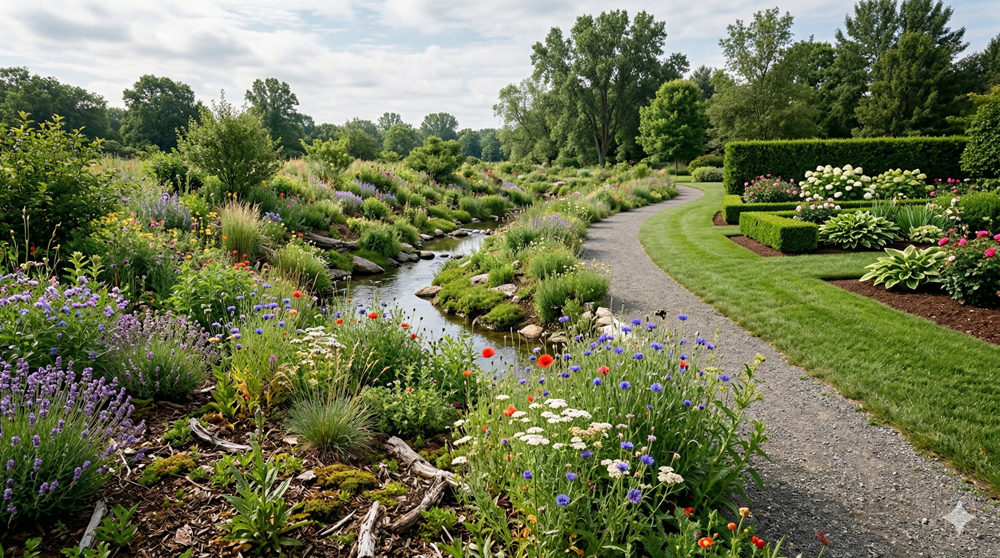
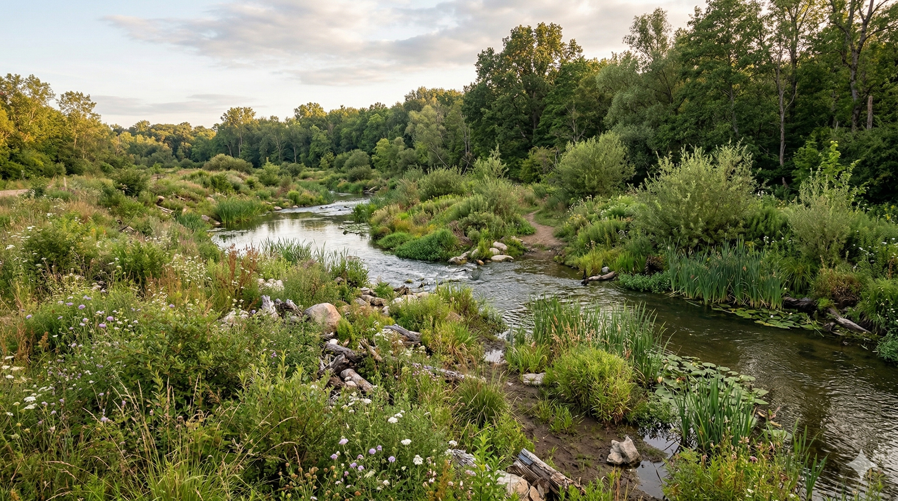
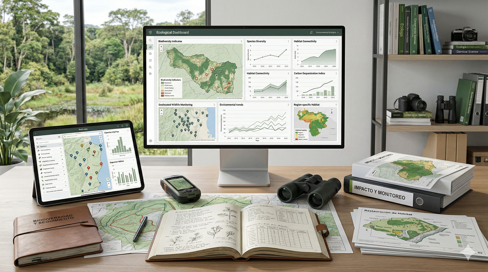

Biodiversidad con criterio
Curso digital
Biodiversidad.
Airbus.
Criterio y acción.
Un recorrido digital para entender qué es la biodiversidad, por qué importa en Airbus, cómo se relaciona con decisiones cotidianas y cómo traducir ese aprendizaje a mejoras creíbles y aplicables en tu entorno de trabajo.

• Casos aplicados
• Plan de acción final
• Distinguir acción real de gesto simbólico
• Formular propuestas más creíbles
Una estructura clara para entrar, entender y seguir avanzando sin perder el hilo.
Cada módulo conecta conceptos con situaciones reconocibles dentro de Airbus.
Bloques breves, visuales y más fáciles de recorrer sin sensación de clase pesada.
Progreso visible para saber siempre dónde estás y qué te falta por completar.
El curso termina en una propuesta propia, no en teoría olvidada.
La biodiversidad no es un decorado: condiciona decisiones, riesgos y credibilidad dentro de Airbus
La biodiversidad no es un asunto ajeno a Airbus. Afecta a riesgos, recursos, decisiones, comunicación y credibilidad. Comprenderla bien es el primer paso para actuar con más criterio.
Biodiversidad y Airbus
La biodiversidad influye en riesgos, recursos, decisiones, comunicación y credibilidad dentro de Airbus.
Decisiones cotidianas
Compras, alimentación, mantenimiento, comunicación y uso del entorno también cuentan.
Acción real frente a gesto simbólico
No toda iniciativa “verde” genera valor ecológico real.
Credibilidad y rigor
Actuar y comunicar con criterio es clave para evitar mensajes vacíos.
Un recorrido que combina claridad, aplicación y sensación de avance real
Seis módulos estructurados, casos prácticos aplicados, actividades breves, progreso visible y un cierre orientado a formular tu propio plan de acción en biodiversidad.

Explora los 6 módulos del curso
Aquí encontrarás una secuencia clara de aprendizaje para recorrer el curso.
Fundamentos de biodiversidad
Comprende qué es la biodiversidad, por qué importa y qué está en juego.
Disponible
Ciclo de vida aeronáutico y biodiversidad
Analiza cómo la aeronáutica afecta a la biodiversidad desde el diseño hasta el fin de vida.
Disponible
Biodiversidad, alimentación y estilos de vida
Explora cómo la alimentación, el consumo y los hábitos cotidianos influyen en la biodiversidad.
Disponible
Conservación, restauración y soluciones basadas en la naturaleza
Aprende a distinguir entre intervenciones sólidas, mejoras parciales y acciones cosméticas.
Disponible
Indicadores, datos e impacto real
Descubre cómo medir, justificar y comunicar impacto con mayor credibilidad.
Disponible
Tu plan de acción en biodiversidad
Convierte el aprendizaje en una propuesta aplicable a tu entorno de trabajo.
DisponibleFundamentos de biodiversidad
La versión completa del contenido largo sigue en tu canvas de ChatGPT. Esta publicación rápida deja el proyecto listo para compartir y para que se vean tus imágenes en GitHub Pages.
Ciclo de vida aeronáutico y biodiversidad
La versión completa del contenido largo sigue en tu canvas de ChatGPT. Esta publicación rápida deja el proyecto listo para compartir y para que se vean tus imágenes en GitHub Pages.
Biodiversidad, alimentación y estilos de vida
La versión completa del contenido largo sigue en tu canvas de ChatGPT. Esta publicación rápida deja el proyecto listo para compartir y para que se vean tus imágenes en GitHub Pages.
Conservación, restauración y soluciones basadas en la naturaleza
La versión completa del contenido largo sigue en tu canvas de ChatGPT. Esta publicación rápida deja el proyecto listo para compartir y para que se vean tus imágenes en GitHub Pages.
Indicadores, datos e impacto real
La versión completa del contenido largo sigue en tu canvas de ChatGPT. Esta publicación rápida deja el proyecto listo para compartir y para que se vean tus imágenes en GitHub Pages.
Tu plan de acción en biodiversidad
La versión completa del contenido largo sigue en tu canvas de ChatGPT. Esta publicación rápida deja el proyecto listo para compartir y para que se vean tus imágenes en GitHub Pages.